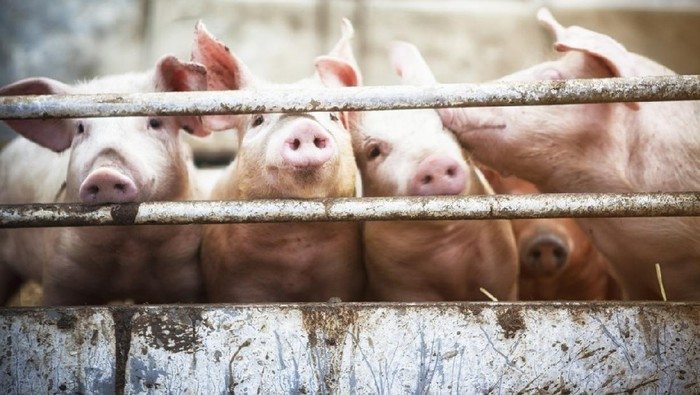

Today's News
Evos Gagal Lolos ke Playoffs, Pertama Kali dalam Sejarah MPL ID

(Sumber:teknokompas.com)
Penurunan performa Evos Legends dimulai pada pekan kelima babak
Regular Season MPL ID S10. Sebab, seluruh pertandingan di pekan kelima
hingga pekan kedelapan babak liga kompetisi tersebut tidak berhasil dimenangkan
oleh tim yang digawangi Pendragon, Tazz, Dreams, Sutsujin, Clover,dan Cr1te ini.
Secara berurutan dari pekan kelima hingga kedelapan, Evos
Legends ditaklukkan oleh Aura Fire (1-2), Alter Ego (0-2), Rebellion
Zion (0-2), Geek Fam (1-2), Onic Esports (1-2), Bigetron Alpha (0-2), dan
RRQ Hoshi (0-2). Seperti diketahui, tim yang berada di posisi ketujuh dan
kedelapan dalam klasemen akhir babak Regular Season MPL ID S10 tidak
bisa melanjutkan perjuangannya ke babak Playoff MPL ID S10.
Tarif Cukai Rokok Naik Pesat

(Sumber:teknokompas.com)
Pemerintah resmi akan menaikkan tarif cukai rokok untuk tahun
2023 dan 2024, dengan rata-rata 10 persen. Namun, besaran ini
dipandang terlalu tinggi bagi kalangan industri. Sekretaris Jenderal
Aliansi Masyarakat Tembakau Indonesia (AMTI) Hananto Wibisono
mengatakan kenaikan cukai hasil tembakau (CHT) dengan rata-rata
10 persen terlalu tinggi. Baginya, angka idealnya ada di 5 persenan.
"Kami menilai keputusan untuk menaikkan tarif cukai hasil tembakau
sebesar 10 persen di tahun 2023 dan 2024 tidak sesuai dengan tujuan
pemerintah untuk menjaga kelangsungan tenaga kerja dan keseluruhan
rantai industri," katanya kepada Liputan6.com, Minggu (6/11/2022).
Ada dua golongan yang jadi perhatiannya. Yakni, sigaret kretek tangan
(SKT) dan sigaret kretek mesin (SKM). Besaran kenaikan untuk keduanya
diketahui berbeda, namun, dia meminta kenaikan hanya berkisar 5 persen.
"Bagi kami, kenaikan tarif sebesar 5 persen untuk Sigaret Kretek Tangan
(SKT) sangat berat. Akan sangat bijaksana jika cukai SKT tidak
dinaikkan, mengingat segmen ini merupakan sektor padat karya," ujarnya.
Heboh Wabah Flu Babi Afrika di NTT, Bisa Menular ke Manusia?

(Sumber:detik.com)
Puluhan ekor babi milik peternak di Kupang
dan Flores Timur, Nusa Tenggara Timur (NTT)
dilaporkan mati mendadak. Diduga, penyebabnya
adalah virus flu babi Afrika atau African Swine Fever (ASF).
Hasil observasi Dinas Peternakan Kupang mencatat
48 ekor babi mati mendadak dengan gejala klinis demam
tinggi dengan suhu tubuh di atas 39 derajat celsius.
Sementara itu ada 30 ekor babi di Flores Timur yan
mati dalam sebulan terakhir.
Hasil pemeriksaan laboratorium menunjukkan babi
yang mati positif terkena flu babi Afrika atau ASF.